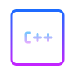
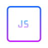
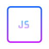

My Top Skills


 

I am a passionate developer with a focus in machine learning and systems development. Recently I developed a new enthusiasm for web development and all the systems behind it. I think I'll stick around.
I have studied math, which i have loved since precalc in high school. But then i found a new purpose in life, proggramming. In my university I had the choice of focusing in computer science and the math that comes along with it. That made me reconsider my career choices
First thing that peaked my interest was AI and machine learning. This is what really got me into coding. I have spend a lot of my free time around datasets in kaggle.com, creating my own datasets and trying to make useful systems such as face recognition, handwritten text recognition and conversation making bots. Given my strong mathematical background and heavy reliance of these systems on statistics, that was an easy start
After that I branched out to c++ and rust development, expecting to make better AI systems. That proved to be a real challenge that my math background didn't seem to help at all. However, I have made some interesting projects, a highlight of which is an old-school rogue-like dungeon crawler with text graphics, paying to tribute to the old pc-game Rogue. I intend to keep working on my skills with those and maybe get a job on the field.
My latest adventures have been around web development and javascript. Granted this space isn't as challenging as systems dev and probably a way more ambiguous career path, considering all my other skills, however i like the artistic and creative side of things. Who knows? Maybe if i give it a chance i'll like it even more.
This is my attempt at asserting if it was a good decision to get in and gamble on bitcoin a bit. I used beautiful soup in python to scrape the data from "site".
Check it outWork in progress project. A rogue-like dungeon-crawler written entirely in rust. The idea came from a rust tutorial book written by Herbert Wolverson, with my litle twists of course.
Check it Out
Everyone has made one of those. I had to make one too. A little detail I have added is the clips from youtube, such as trailers etc.
Check it Out